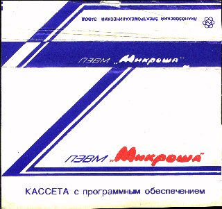
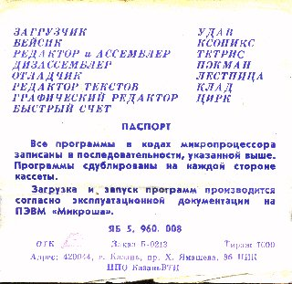
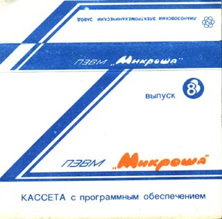
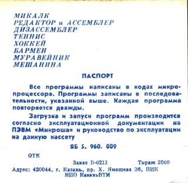
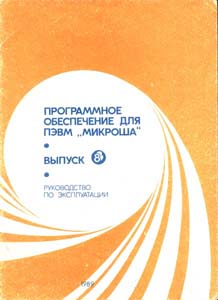
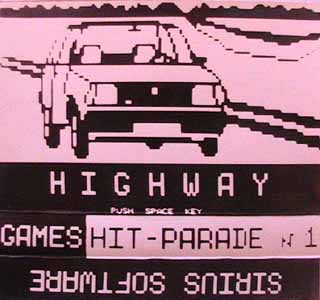

Здесь собираются архивы с ПО для персонального компьютера "Микроша" (производство СССР).
Официальная оригинальная кассета
 
Файл: officialCassete01.zip
Оригинальная кассета, которая поставлялась вместе с компьютером.
Состав программ:
- Загрузчик,
- Бейсик,
- Редактор и Ассемблер,
- Дизассемблер,
- Отладчик,
- Редактор текстов,
- Графический редактор,
- Быстрый счет,
- Удав,
- Ксоникс,
- Тетрис,
- Пэкман,
- Лестница,
- Клад,
- Цирк
Описание данных программ было в составе руководства по экплуатации ПЭВН "Микроша", и находится в файлах:
- officialCassete01(instruction).zip
- officialCassete01(instruction_Basic).zip
Кассета с программным обеспечением. Выпуск 8
  
Файл: officialCassete02(vipusk_8).zip
Состав кассеты:
- Микалк,
- Редактор и Ассемблер,
- Дизассемблер,
- Теннис,
- Хоккей,
- Бармен,
- Муравейник,
- Мешанина
Прочие официальные кассеты с программным обеспечением
Кассета с программным обеспечением. Выпуск 13.
Состав:
- PASCAL,
- Макроассемблер с отладчиком,
- Диггер,
- Boulder Dash,
- Паника,
- Реверси,
- Покер,
- Уголки
Кассета с программным обеспечением. Выпуск 15.
- Монитор ОЗУ,
- Редактор структурных текстов,
- Шашки,
- RISE,
- XTRO,
- PAC-HALL,
- Пятнашки
Архив с Game Integrator

Файлы: games_integrator_SOUND_side_X.7z.00X
Архив в формате "7z" разбит на 2 части. Внутри - файл .WAV (22 КГц, 8 бит, моно), который, надеюсь, будет загружаться на настоящем "железном " Микроше. На оригинальной кассете программы были записаны и на другой стороне кассеты. (Программы те же, это просто резервная копия).
Файл: games_integrator_bashkiria2m_shp1.zip
В этом архиве эти же программы подготовлены к загрузке в эмуляторе компьютера "Башкирия 2М" в режиме Микроши (http://bashkiria-2m.narod.ru). Перед запуском эмулятора для загрузки этих программ необходимо удалить в файле Mikrosha.cfg в папке Config эмулятора строку
hrq=CPU.hold
в разделе "dma : K580wt57 {".
Сборники с сайта onego.ru
Файл: sbornik_onego_ru_03.zip
Состав:
- drvlocnt - драйвер переферийной машины для локальной сети
- basicnt - Бейсик для локальной сети
- dumpcheck - dump&checksum calculation program
- zagr_bsv - загрузчик BSV
- drvcennt - драйвер центральной машины локальной сети
- adaptPO - адаптер ПО с РК-86 на Микрошу
- disassMK - дизассемблер "Микрас"
- best-es - Best-editor
- ed-popov - редактор текстов v1.2 (Попов)
- tychon - TYCHON ED-ASSM v-3
- disassRs - Disassm "Ресурс"
- basicMM - Basic "Микрон-М"
- tedmicro - TED/MICRO
- ddt - DDT Vers 1.0
- monitBSV - монитор "BSV"
Файл: sbornik_onego_ru_04.zip
Системные :
- otladbdu - Отладчик BDU
- dumpbsd - Экранный дамп BSD
- disasbdz - Малый дизассемблер BDZ
- besystem - B&E System
- bmikrin5 - Basic "Микрон" V-5.0
- datachan - DATA CHANNEL
Игровые:
- boks - Бокс
- boulder - Boulder Dash
- karate - Карате
- life - Жизнь
- mars2 - Марс
- mars3 - Марс
- marsG100 - Марс (запуск G100)
- panika - Паника
- pentis - Пентис
- saboteur - Saboteur
- saper - Сапер
- saper2 - Сапер
- skythe - SKYTHE
- slams - SLAMS
- sos - SOS
- torpeda - Торпедная атака
- zamok - Замок
Файл: sbornik_onego_ru_06.zip
Состав:
- boks - бокс
- boulder - Boulder Dash
- chess - шахматы
- crossfir - CrossFire
- desant0 - описание серии "Десантник"
- design1 - Design1 - сборник из Xonix и Zm
- faraon - фараон
- football - футбол
- hokkey - хоккей
- kosilka - косилка
- krestiki - крестики-нолики
- klad - клад (Рига)
- landmoon - посадка на Луну
- lestn2 - лестница 2
- mars - марс
- meshanin - мешанина
- pvoG3400 - ПВО (запуск G3400)
- ralli - ралли
- reversi - реверси
- scvosh - сквош
- soldier - солдат удачи
- stranger - Strangers
- taina - тайны океана
- way - Way
- zstation - Z-станция
Файл: sbornik_onego_ru_07.zip
Программы :
- dump - просмотр дампа памяти
- monRKMK - вариант Монитора для работы с файлами РК-86 (из книги С.Н.Попова)
- svetpris - светомузыкальня приставка
- edtxt - редактор текстов "Микрон"
Тексты в формате Редактора "Микрон" :
- drv-okno1 - драйвер оконного интерфейса
- drv-okno2 - драйвер оконного интерфейса
- drv-okno3 - драйвер оконного интерфейса
- okno_en2 - драйвер оконного интерфейса
- okno_end - драйвер оконного интерфейса
- inst-BDZ - инструкция к дизассемблеру BDZ
- inst-BE - инструкция к B&E System
- inst-BIS - описание программ призводства НПК "БИС"
- inst-BSD - инструкция к экранному дампу BSD
- inst-DCH - инструкция к Data Channel V1.0
- inst-MT - инструкция к редактору "Мастер-Текст"
- kiril - статья о русификации ZX Spectrum
- monMikr - стандартный Монитор Микроши
- monMikr2 - стандартный Монитор Микроши
- monRKMK1 - Монитор из книги С.Н. Попова
- monRKMK2 - Монитор из книги С.Н. Попова
- prBIS - программирование БИС ВВ55 и ВИ53
- prDISP - программирование контроллера дисплея
- prPDP - программирование контроллера ПДП
- i-BE-MK - инструкция к "Best-Editor" и дизассемблеру "Микрас"
- instBDU1 (2,3,4) - инструкция к отладчику BDU в 4-х частях
- inst-MUS - инструкция к музыкальным программам
- inst-NT - инструкция к программам для работы в локальной сети
- comPas1 (2,3) - описание пакета КомПас - компиллятор Паскаля
- Forth1 (2,3,4,5) - описание Форт-системы ЛС-1
- inst-COP - описание копировщика программ COPY/V1.8
- dr - описание нескольких программ : Драйвер магнитофона, Поиск, TAYLOR 1.0,1.2 , Графический редактор V 2.0
- abacus - библиотека подпрограмм на Ассемблере для работы с плавающей точкой
- + утилита для восстановления текстовых файлов (Win9x - recall.zip)
Файл: sbornik_onego_ru_08.zip
Состав:
- ataka - Атака
- ball - BALL
- barmen - Бармен
- bomber - Bomber Aircraft
- chernyi - Черный ящик (запуск G ВК RUN ВК)
- draznil - Дразнилка (запуск G ВК RUN ВК)
- fondbirz - Фондовая биржа (запуск G ВК RUN ВК)
- gorynych - Змей Горыныч
- kooperat - Кооператив (запуск G ВК RUN ВК)
- life - Жизнь
- liquid - Liquid Sky
- pentis - Пентис
- pifpaf - ПифПаф
- piton3 - Питон3
- poker - Покер
- redflow - Red Flower
- sad - Сад
- saper - Сапер
- saper2 - Сапер2
- skachki - Скачки
- slams - Slams
- snake - Snake
- stakan - Стакан
- torpeda - Торпедная атака
- tsanshi - Цзяньшидзи (запуск G ВК RUN ВК)
- tsanshi3 - Цзяньшидзи3 (запуск G ВК RUN ВК)
Файл: sbornik_onego_ru_09.zip
Состав:
- clock - часы
- drvMagn - драйвер магнитофона
- forth - Форт-система ЛС-1
- floatSIX - библиотека к Форт-системе ЛС-1 в формате Форт
- golos2 - голос2 - ввод и воспроизведение голоса
- handikr - Handikraft - программатор
- instSC - инструкция к SuperCalc
- SuperCal - SuperCalc - электронная таблица
- lightpen - драйвер светового пера
- poisk - Поиск - для работы с магнитофоном
- rom4 - ПЗУ4
- tailor10 - Taylor 1.0
- tailor12 - Taylor 1.2
- vvodRK86 - автоввод в формате РК-86
- vyvodRK - вывод в формате РК-86
Файл: sbornik_onego_ru_10.zip
Состав:
- basCol - Бейсик "Микроша" с цветом
- basColPr - программа на Бейсике с цветом (формат Бейсика "Микроша")
- BasCPM - Basic Microsoft [CP/M}
- basMikrn - Бейсик "Микрон"
- sBasicM - SBASIC Microposol
- copy18 - копировщик программ
- farida - программная поддержка Фарида
- grafred2 - графический редактор V 2.0
- imagemak - Imagemaker (программа на базе графического редактора позволяющая создавать мультфильмы из картинок)
- imageUT1 - утилита №1 к Imagemaker
- imageUT2 - утилита №2 к Imagemaker
- insImag - инструкция к Imagemaker
- Пакет PASCAL ЛС-1.3 "КомПас" (компилятор) :
- genPcode - генератор Р-кода
- comPcode - компилятор Р-кода
- libPcode - дополнительная библиотека
- demoPcod - демонстрационная программа (формат Pascal КомПас)
Файл: sbornik_onego_ru_11.zip
Пакет для работы с цветным изображением
Состав:
- basColor - Basic-COLOR
- insColTV - инструкция по подключению Микроши к цветному телевизору
- ColorMus - цветомузыка
- insBcol1 (2,3,4,5) - инструкция к Basic-COLOR (формат - basic-color)
- grafika - демонстрационная программа (формат - basic-color)
- teletest - демонстрационная программа (формат - basic-color)
Файл: sbornik_onego_ru_12.zip
Пакет программирования на языке С:
Состав:
- best-c - Saratov Best-C compiler
- edmicro - редактор текстов "Микро"
- insBstC1 (2,3,4) - инструкция к Best-C (формат ED "Микро")
- VvodVyv - пакет ввода/вывода на языке С (формат С, ED "Микро")
- ferzi - пример программы на С (формат С, ED "Микро")
- grafika - пример программы на С (формат С, ED "Микро")
- piramids - пример программы на С (формат С, ED "Микро")
- shifr - пример программы на С (формат С, ED "Микро")
- tennis - пример программы на С (формат С, ED "Микро")
Файл: sbornik_onego_ru_13.zip
Состав:
- cherv - Червяк
- digger1 (2,3) - Диггер 1,2,3 части
- liquid - Житкое небо
- maze - Maze
- monster - Монстр
- muzSalon - Музыкальный салон
- robot - Робот-2390
- udav3 - Удав3
- zagibon - Загибон
- серия "Голубые береты" :
- perelet - Перелет (1 серия)
- gonka - Гонка (2 серия)
- samolet - Самолет (3 серия)
- shahta - Шахта (4 серия)
- shtab - Штаб (5 серия)
Файл: sbornik_onego_ru_15.zip
Состав:
- almaz - Алмаз
- ataka - Атака
- insZYCAP - инструкция к Zycaps
- zycaps - Zycaps
- kindza - Кин-Дза-Дза
- kommut2 - Пакет из нескольких игр (тетрис, пэкман, ксоникс..)
- landmaze - Land of Maze
- life - Жизнь
- loderun - Lode runner
- mars - Марс
- mars13 - Марс v 1.3
- paket2 - Пакет из нескольких игр (xonix, pacman..)
- pentis - Пентис
- polechud - Поле чудес
- saboteur - The saboteur
- saper - Сапер
- saper2 - Сапер2
- slams - Slams
- snakes - Snakes
- sp21 - Sp21
- stelbi - Стелби
- syntez - Синтезатор речи
- zamok - Замок
Файл: sbornik_onego_ru_16.zip
Состав:
- insScGen - инструкция к экранному генератору
- scrGen - экранный генератор
- insBox - инструкция к пакету BOX
- sokoban - Soko-ban (пакет BOX)
- steklo - Стекло (пакет BOX)
- insSOS - инструкция к SOS-системе
- sosSyst - SOS-система
- sosDB.tx - База знаний к SOS-системе
- polechud - Поле чудес
- rubic - Rubic
- shalun - Робот-шалун
- tetrisP - Тетрис
- urMash0 (1,2,3) - Уроки машинописи
- volkano - Volkano
- xonixMic - Xonix "Micron"
Файл: sbornik_onego_ru_17.zip
Состав:
- basApog - Бейсик "Апогей"
- basServs - Бейсик "Сервис"
- insNel92 - инструкция к Nelson92
- nelson92 - Nelson92
- mk-apog - рекомендации по переносу программ на Апогей
- mk-rk86 - рекомендации по переносу программ на РК-86
- numerat - Нумератор
- tychon - Tychon
- urAssm1 (2,3..10) - уроки Ассемблера
- vyvName - вывод Name
Файл: sbornik_onego_ru_18.zip
Состав:
- forth63 - Форт V 6.3
- insTxtPr - Инструкция к текстовому процессору
- txtproc - Текстовый процессор
- kopir - Копировщик
- rdwr61 - RDWR V6.1
- syntez - Синтезатор речи
- urAs1 (2,3..9) - Уроки Ассемблера
- libAs.tx - библиотека подпрограмм на Ассемблере (формат ED "Микрон")
Файл: sbornik_onego_ru_19.zip
Состав:
- musredak - Музыкальный редактор
- prilMRed - приложение к Музыкальному редактору
- musDikt -Музыкальный диктант
- prilMDik - приложение к Музыкальному диктанту
- musShkat -Музыкальная шкатулка
- football - Футбол
- manipul -Манипулятор
- prPitona - Приключения питона
- riverbed - River-Bed
- shirker - Shirker
- stalker - Сталкер
- superud - Суперудав
- zmeelov - Змеелов
- boks - Бокс
- brikety - Брикеты
- cen - CEN
- inPusher - инструкция к Pusher
- pusher - Pusher
- lovushka - Ловушка
- perehod - Переход
- task - Таскать-неперетаскать (запуск G100)
Файл: sbornik_onego_ru_20.zip
Состав:
- ball - BALL
- boks -Бокс
- detectiv - Детектив
- doroga - Дорога
- fantast - Фантастика
- gorynych - Змей Горыныч
- kamnepad - Камнепад
- karate - Карате
- kubiki - Кубики
- mars -Марс
- panika - Паника
- riverbed - River Bed
- sabotazh - Саботаж
- scorpion - Скорпион
- shirker - Shirker
- skythe - Scythe
- sos - SOS
- space - Space
- space2 - Space2
- spaceman - Spaceman
- torpeda - Торпедная атака
- zycaps - Zycaps
- zyc-inst - инструкция к Zycaps
- zyc-red - редактор уровней к Zycaps
- zyc-scr1 (2,3..6) - экраны к Zycaps
Файл: sbornik_onego_ru_21.zip
Состав:
- Сборник программ на Бейсике и Паскале
- (Basic"Микро"V.02, Basic-PLUS, Basic-BEST, PASCAL-МФТИ)
Файл: sbornik_onego_ru_22.zip
Состав:
- afgan - Афган (запуск G100)
- bombard - Бомбардир
- borodino - Бородино
- igravt - Игровой автомат
- manipul - Манипулятор
- mars - Марс
- noviygod - Новый Год
- pilotmas - Пилот мастер
- rein - Рейн
- rikoshet - Рикошет
- shirker - Shirker
- slalom - Слалом
- sprint - Спринт
- spysdem - Spy's Demise
- voenmar - Военный марафор (запуск G260)
- zmeigor - Змей Горыныч
Файл: sbornik_onego_ru_23.zip
Состав:
Игровые :
- goroskop - Гороскоп
- labirint - Лабиринт
- nlo - НЛО
- stranam - Страна Монстров (запуск G ВК RUN ВК)
- vampir - Вампир (запуск G ВК RUN ВК)
- awey - AWEY
- spysdem - Spy's Demise
- shtefan - Пакет игр Shtefan
Системные :
- shifr - Зашифровка/расшифровка текстов редактора Микрон
Файл: sbornik_onego_ru_24.zip
Состав:
- Тексты в формате Редактора "Микрон",
- Тексты в формате Windows txt-файлов : различные примеры программ на Ассемблере и Паскале
- Текстовые файлы различной тематики, обнаруженные на кассетах
- Утилита для восстановления текстовых файлов (Win9x - recall.zip)